직업상담사-2급 (2013-08-30 기출문제)
1과목: 직업상담학
1. 상담의 초기면접 단계에서 일반적으로 고려되는 사항이 아닌 것은?
- 통찰의 확대
- 목표설정
- 상담의 구조화
- 문제의 평가
(정답률: 68%)

2. 집단 직업상담에 관한 설명으로 가장 적합하지 않은 것은?
- 집단 직업상담은 개인 직업상담보다 일반적으로 직업성숙도가 높은 사람들에게 더 효과적이다.
- 가능한 모임의 횟수를 최소화해야 한다.
- 남성과 여성은 집단 직업상담에 임할 때의 목표가 서로 다를 수 있으므로 성별을 고려해야 한다.
- Butcher는 집단 직업상담의 3단계로 탐색단계, 전환단계, 행동단계를 제시하였다.
(정답률: 77%)
3. 청소년 직업지도의 기본원리와 가장 거리가 먼 것은?
- 변화하는 직업 세계에 대한 이해를 토대로 이루어져야 한다.
- 인간의 성격 특성과 재능에 대한 이해를 토대로 신뢰관계를 형성한 후 진행되어야 한다.
- 취업단계의 환경적 요구를 반영하며 지도가 이루어져야 한다.
- 가장 핵심적인 요소는 진로 혹은 직업의 결정이므로 개인의 의사결정과정에 대한 지도가 포함되어야 한다.
(정답률: 60%)
4. 직업선택에 대해 내담자들이 보이는 우유부단함의 일반적인 이유와 가장 거리가 먼 것은?
- 자신이 선택하려는 직업영역에서의 다재다능함
- 자신의 선택이 중요한 다른 사람에게 나쁜 결과를 줄 것이라는 죄의식
- 자신이 선택하려는 직업 중에 좋은 직업이 없음
- 실수 영역을 예견하고 그에 대비하는 융통성
(정답률: 62%)
5. 직업상담의 문제유형에 관한 Crites의 분류에 해당하지 않는 것은?
- 현실형
- 다재다능형
- 적응형
- 불충족형
(정답률: 71%)
6. 상담실에 왔으나 상담에 적극적으로 참여할 의사가 없는 ‘방문자 유형’의 내담자에게 적절한 상담방안이 아닌 것은?
- 내담자의 목표에 동의하기
- 내담자가 원하는 것을 발견하기
- 의뢰한 사람의 요구에 대한 내담자의 견해 묻기
- 해결중심의 대화로 전환하기
(정답률: 58%)
7. 불안을 경험할 때 내담자중심 상담에서 불일치를 가정하는 3가지 자아에 해당하지 않는 것은?
- 현실적 자아
- 이상적 자아
- 당위적 자아
- 타인이 본 자아
(정답률: 77%)
8. 내담자가 자기지시적인 삶을 영위하고 상담자에게 의존하지 않게 하기 위해 상담사가 내담자의 지식을 공유하며 자기강화 기법을 적극적으로 활용하는 행동주의 상담기법은?
- 모델링
- 내현적 가감법
- 자기관리 프로그램
- 과잉교정
(정답률: 79%)
9. 희망직업, 자신의 흥미 및 적성에 대한 이해가 부족한 내담자를 상담하게 되었을 때 상담 및 직업지도 서비스 업무과정을 바르게 나열한 것은?
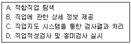
- D → C → A → B
- A → B → D → C
- D → A → B → C
- A → D → C → B
(정답률: 60%)
10. 직업상담에서 내담자가 검사 도구에 대해 비현실적 기대를 가지고 있을 때 상담자가 취할 수 있는 행동으로 가장 적합한 것은?
- 즉시 검사를 실시한다.
- 검사 사용 목적에 대하여 내담자에게 설명한다.
- 추천되는 검사를 상담사가 정해준다.
- 심리검사는 상담관계를 방해하므로 실시하지 않는다.
(정답률: 88%)
11. 정신분석적 상담에서 내담자의 갈등과 방어를 탐색하고 이를 해석해 나가는 과정은?
- 논박
- 훈습
- 통찰
- 조정
(정답률: 73%)
12. 인간중심 진로상담의 개념에 관한 설명으로 옳지 않는 것은?
- 일의 세계 및 자아와 관련된 정보의 부족에 관심을 둔다.
- 자아 및 직업과 관련된 정보를 거부하거나 왜곡하는 문제를 찾고자 한다.
- 진로선택과 관련된 내담자의 불안을 줄이고 자기의 책임을 수용하도록 한다.
- 상담자의 객관적 이해를 내담자에 대한 자아 명료화의 근거로 삼는다.
(정답률: 51%)
13. 다음에서 설명하고 있는 생애진로사정의 구조는?
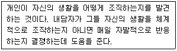
- 진로사정
- 전형적인 하루
- 강점과 장애
- 요약
(정답률: 83%)
14. 특성-요인 직업상담의 과정을 바르게 나열한 것은?
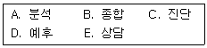
- A → B → C → D → E
- C → A → B → D → E
- A → B → C → E → D
- A → E → C → D → B
(정답률: 82%)
15. Levinson의 발달이론에 관한 설명으로 틀린 것은?
- 초기 성인변화 단계는 성인기로 변화하기 위한 단계를 의미하며 연령은 17~22세까지이다.
- 초기 성인서계 단계는 22~28세까지의 단계로서 성인 생활양식을 형성하는 시기이다.
- 중기 상인단계는 초기 성인단계가 완성되며 안정되는 시기로서 35~40세까지의 연령에 해당한다.
- 중년기 마감단계는 55~60세까지의 단계로 중년기가 완성되는 단계이다.
(정답률: 68%)
16. 다음과 관계있는 상담이론과 학자가 바르게 짝지어진 것은?
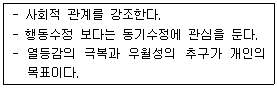
- 실존주의적 상담 - Frankl
- 개인심리학적 상담 - Adler
- 형태주의적 상담 - Perls
- 현실치료적 상담 – Glasser
(정답률: 76%)
17. 포괄적 직업상담에서 내담자가 지닌 직업상담의 문제를 가려내기 위해 실시하는 변별적 진단검사와 가장 거리가 먼 것은?
- 직업성숙도검사
- 직업적성검사
- 직업흥미검사
- 경력개발검사
(정답률: 70%)
18. 상담사의 윤리적 태도와 행동으로 가장 적합한 것은?
- 내담자와 상담관계 외에도 사적으로 친밀한 관계를 형성한다.
- 과거 상담사와 성적 관계가 있었던 내담자라도 상담관계를 맺을 수 있다.
- 내담자의 사생활과 비밀보호를 위해 상담 종결 즉시 상담기록을 폐기한다.
- 비밀보호의 예외 및 한계에 관한 갈등상황에서는 동료 전문가의 자문을 구한다.
(정답률: 82%)
19. 상담 장면에서 인지적 명확성이 부족한 내담자를 위한 개입방법이 아닌 것은?
- 잘못된 정보를 바로 잡아줌
- 구체적인 정보를 제공함
- 원인과 결과의 착오를 바로잡아줌
- 가정된 불가피성에 대해 지지적 상상을 제공함
(정답률: 80%)
20. 다음은 직업상담 과장 중 무엇에 대한 설명인가?
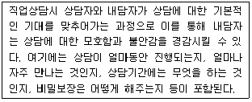
- 상담의 명료화
- 상담의 구체화
- 상담의 안정화
- 상담의 구조화
(정답률: 76%)
2과목: 직업심리학
21. 검사의 구성타당도 분석방법으로 적합하지 않는 것은?
- 실험을 통한 집단 간 차이검증
- 유사한 특성을 측정하는 기존 검사와의 상관계수 분석
- 확인적 요인분석
- 기대표 작성
(정답률: 65%)
22. Gottfredson이 제시한 직업포부의 발달단계가 아닌 것은?
- 성역할 지향성
- 힘과 크기 지향성
- 사회적 가치 지향성
- 직업 지향성
(정답률: 78%)
23. 다음 중 정서기능에 포함되지 않는 것은?
- 자신의 정서를 인식하고 관리하는 능력
- 상황을 분석하고 판단하는 능력
- 타인과 원만하게 관계를 유지하는 능력
- 자기기분을 북돋아 주고 동기화 시키는 능력
(정답률: 72%)
24. 직업상담에 사용되는 질적 측정도구가 아닌 것은?
- 역할놀이
- 제노그램
- 카드분류
- 욕구 및 근로 가치 설문
(정답률: 74%)
25. 다음은 Holland의 6가지 성격유형 중 무엇을 해당하는가?
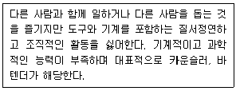
- 현실적 유형
- 탐구적 유형
- 사회적 유형
- 관습적 유형
(정답률: 76%)
26. Ginzberg가 제시한 진로발달단계에 해당되지 않는 것은?
- 환상기
- 잠정기
- 탐색기
- 현실기
(정답률: 83%)
27. 직무스트레스에 관한 설명으로 옳은 것은?
- 17-OHCS라는 당류부신피질 호르몬은 스트레스의 생리적 지표로서 매우 중요하게 사용된다.
- B형 행동유형이 A형 행동유형보다 높은 스트레스 수준을 유지한다.
- Yerkes와 Dodson의 역 U자형 가설은 스트레스 수준이 낮으면 작업능률이 높아진다는 가설이다.
- 일반적응증후(GAS)는 저항단계, 경계단계, 탈진단계를 거치면서 사람에게 나쁜 결과를 가져다준다.
(정답률: 77%)
28. Herzberg의 직무동기이론에서 동기요인에 해당하는 것은?
- 회사정책과 관리
- 직무 그 자체
- 개인 상호간의 관계
- 지위 및 안전
(정답률: 62%)
29. 직무분석의 방법 중 비교확인법에 관한 설명으로 옳은 것은?
- 분석자 자신이 직무활동에 직접 참여하여 생생한 작업분석 자료를 얻는 방법이다.
- 분석자가 작업장을 방문하여 직무활동을 관찰하고 그 결과를 기술하는 방법이다.
- 현장의 작업자 또는 감독자에게 설문지를 배부하여 이들로 하여금 직무내용을 기술하게 하는 방법이다.
- 수행하는 작업이 다양하고 직무의 폭이 넓어 단시간의 관찰을 통해서 분석하기 어려운 경우에 적합한 방법이다.
(정답률: 68%)
30. 어떤 심리검사의 내적합치도 계수가 매우 낮을 때의 설명으로 옳은 것은?
- 검사가 측정하고자 하는 것을 측정하고 있지 못하다.
- 검사의 두 가지 형태가 매우 다른 개념을 측정하고 있다.
- 검사가 성질상 매우 다른 속성을 측정하는 문항들로 구성되어 있다.
- 검사를 받은 사람이 또 다시 검사를 받을 때 매우 다른 점수를 받을 것이다.
(정답률: 54%)
31. 다운사이징 시대의 경력개발 형태가 아닌 것은?
- 다양한 능력의 개발
- 내부 배치
- 재교육
- 승진 촉진 개발
(정답률: 59%)
32. 진로이론에 관한 설명으로 옳은 것은?
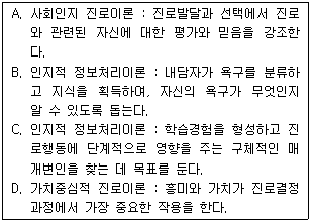
- A, B
- A, C
- B, D
- C, D
(정답률: 60%)
33. 직무분석 기법 중 직무 수행자의 직무 행동 가운데 성과와 관련하여 효과적인 행동과 비효과적인 행동을 구분하여 직무를 분석하는 방법은?
- 가중치 체크리스트
- 중요사건 기법
- 강제선택 체크리스트
- 기능적 직무분석
(정답률: 70%)
34. 평균이 100, 표준편차가 15이고 정상분포를 이루고 있는 검사의 경우, 전체 사례의 68%가 속하게 되는 점수의 범위는?
- 85~115
- 70~130
- 65~145
- 50~160
(정답률: 74%)
35. 다음 중 경력개발 프로그램의 하나인 종업원 개발 프로그램에 해당되지 않는 것은?
- 훈련 프로그램
- 평가 프로그램
- 후견인 프로그램
- 직무순환 프로그램
(정답률: 68%)
36. 정규분포를 따르는 적성검사에서 철수는 규준에 비추었을 때 중앙값을 얻었다. 이런한 결과가 의미하는 바를 가장 잘 설명하고 있는 것은?
- 100점 만점에서 50점을 획득하였다.
- 자신이 얻을 수 있는 최고 점수를 얻었다.
- 적성검사에서 도달해야 할 준거점수를 얻었다.
- 같은 또래 집단의 점수분포에서 평균 점수를 얻었다.
(정답률: 75%)
37. 직장상사에게 야단맞은 사람이 부하직원이나 식구들에게 트집을 잡아 화풀이를 하는 것은 스트레스에 대한 방어적 대처 중 어떤 개념과 가장 일치하는가?
- 합리화(Rationalization)
- 동일시(Identification)
- 보상(Compensation)
- 전위(Displacement)
(정답률: 78%)
38. 다음 진로발달 이론가들 중에서 발달 단계별 특징 및 과제를 강조한 사람은?
- Parsons
- Holland
- Krumboltz
- Super
(정답률: 79%)
39. 다음은 어떤 스트레스 관리전략에 해당하는가?
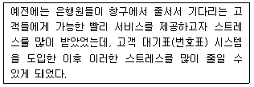
- 반응지향적 관리전략
- 증후지향적 관리전략
- 평가지향적 관리전략
- 출처지향적 관리전략
(정답률: 77%)
40. 적성검사에서 높은 점수를 받은 사람들이 입사 후 업무수행이 우수한 것으로 나타났다면, 이 검사는 어떠한 타당도가 높은 것인가?
- 구성타당도(Construct Validity)
- 내용타당도(Content Validity)
- 예언타당도(Predictive Validity)
- 공인타당도(Concurrent Validity)
(정답률: 82%)
3과목: 직업정보론
41. 한국표준직업분류의 포괄적인 업무에 대한 직업분류 원칙에 해당하는 않는 것은?
- 주된 직무 우선 원칙
- 취업시간 우선 원칙
- 최상급 직능수준 우선 원칙
- 생산업무 우선 원칙
(정답률: 73%)
42. 직업정보 제공에 관한 설명으로 옳은 것은?
- 모든 내담자에게 직업정보를 우선적으로 제공한다.
- 상담사는 다양한 정보를 수집하기 위해 지속적으로 노력한다.
- 진로정보 제공은 상담의 초기단계에서 이루어지며, 이 경우 내담자의 피드백은 고려하지 않는다.
- 내담자가 속한 가족, 문화보다는 표준화된 정보를 우선적으로 고려하여 정보를 제공한다.
(정답률: 78%)
43. 다음은 한국직업사전 부가정보 중 어떤 작업강도에 해당하는가?
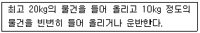
- 가벼운 작업
- 보통 작업
- 힘든 작업
- 아주 힘든 작업
(정답률: 75%)
44. 고용정보의 가공 · 분석에 관한 설명으로 틀린 것은?
- 정보의 가공 및 분석목적을 명확히 해야 한다.
- 변화 동향에 유의해야 한다.
- 숫자로 표현할 수 없는 정보는 배제해야 한다.
- 다른 통계와의 관련성 및 여러 측면을 고려해야 한다.
(정답률: 83%)
45. 워크넷(구직)에서 제공하는 채용정보 중 기업형태별 검색에 해당하지 않는 것은?
- 강소기업
- 대기업
- 중소기업
- 벤처기업
(정답률: 75%)
46. 한국표준산업분류의 산업결정방법에 관한 설명으로 틀린 것은?
- 생산단위의 산업 화동은 그 생산단위가 수행하는 주된 산업 활동의 종류에 따라 결정된다.
- 계절에 따라 정기적으로 산업을 달리하는 사업체의 경우에는 조사시점에서 경영하는 사업과는 관계없이 조사대상 기간 중 산출액이 많았던 활동에 의하여 분류된다.
- 단일사업체의 보조단위는 그 사업체의 일개 부서로 포함하지 않고 별도의 사업체로 처리한다.
- 휴업 중 또는 자산을 청산중인 사업체의 산업은 영업 중 또는 청산을 시작하기 전의 산업활동에 의하여 결정하며, 설립중인 사업중인 사업체는 개시하는 산업활동에 따라 결정한다.
(정답률: 68%)
47. 한국표준산업분류의 분류구조 및 부호체계에 관한 설명으로 옳은 것은?
- 부호처리를 할 경우에는 알파벳 문자와 아라비아 숫자를 함께 사용토록 했다.
- 권고된 국제분류 ISIC Rev.4를 기본체계로 하였으나, 국내실정을 고려하여 독자적으로 분류항목과 분류부호를 설정하였다.
- 중분류의 번호는 001부터 999까지 부여하였으며, 대분류별 중분류 추가여지를 남겨놓기 위하여 대분류 사이에 번호 여백을 두었다.
- 소분류 이하 모든 분류의 끝자리 숫자는 01에서 시작하여 99에서 끝나도록 하였다.
(정답률: 77%)
48. 고용창출지원을 위한 고용안정사업에 해당하는 것은?
- 고령자 고용연장 지원금
- 중소기업 전문인력활용 장려금
- 임금피크제 보전수당
- 육아휴직 등 장려금
(정답률: 46%)
49. 내용분석법을 통해 직업정보를 수집할 때의 장점이 아닌 것은?
- 정보제공자의 반응성이 높다.
- 장기간의 종단연구가 가능하다.
- 필요한 경우 재조사가 가능하다.
- 역사연구 등 소급조사가 가능하다.
(정답률: 63%)
50. 워크넷(직업 · 진로)에서 학과정보를 학과계열과 취업률에 따라 검색하고자 할 때 선택할 수 있는 학과게열이 아닌 것은?
- 문화관광계열
- 교육계열
- 자연계열
- 예체능계열
(정답률: 69%)
51. 직업정보 수집방법으로서 면접법에 관한 설명으로 가장 적합하지 않은 것은?
- 표준화 면접은 비표준화 면접보다 타당도가 높다.
- 면접법은 질문지법보다 응답범주의 표준화가 어렵다.
- 면접법은 질문지법보다 제3자의 영향을 배제할 수 있다.
- 표준화 면접에는 개방형 및 폐쇄형 질문을 모두 사용할 수 있다.
(정답률: 59%)
52. 재직자 계좌적합훈련과정의 구분이 아닌 것은?(관련규정 개정전 문제로 기존 정답은 3번입니다. 여기서는 3번을 누르면 정답 처리 됩니다.)
- 집체훈련과정
- 외국어훈련과정
- 혼합훈련과정
- 인터넷원격훈련과정
(정답률: 77%)
53. 직업정보의 일반적인 평가 기준과 가장 거리 먼 것은?
- 어떤 목적으로 만든 것인가?
- 얼마나 비싼 정보인가?
- 누가 만든 것인가?
- 언제 만들어진 것인가?
(정답률: 83%)
54. 한국표준직업분류의 대분류 9에 해당하는 것은?
- 사무 종사자
- 단순노무 종사자
- 서비스 종사자
- 기능원 및 관련 기능 종사자
(정답률: 72%)
55. 2013년에 신규 시행되는 국가기술자격 종목은?
- 방수산업기사
- 기상감정기사
- 설비보전기사
- 컨테이너크레인운전기능사
(정답률: 41%)
56. 한국직업전망에 관한 설명으로 옳은 것은?
- 한국직업전망은 2001년 발간되기 시작하였다.
- 한국직업전망의 수록직업은 한국표준직업분류에 근거한다.
- 해당 직업에 대한 고용전망은 감소, 다소 감소, 다소 증가, 증가 등 4가지 수준으로 구분하여 제시한다.
- 해당 직업에 종사하는 사람들의 평균적인 임금수준, 학력수준 등 관련 정보를 제공하기 위해 한국직업정보의 재직자 조사 결과를 활용하였다.
(정답률: 44%)
57. 다음은 국가기술자격 감정기준 중 어떤 등급에 관한 것인가?
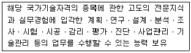
- 기술사
- 기사
- 산업기사
- 기능사
(정답률: 74%)
58. 한국표준산업분류에서 각 생산단위가 노동, 자본, 원료 등 자원을 투입하여, 재화 또는 서비스를 생산 또는 제공하는 일련의 활동과정은?
- 산 업
- 산업활동
- 생산활동
- 생 산
(정답률: 67%)
59. 공공직업정보의 일반적인 특성에 해당되는 것은?
- 필요한 시기에 최대한 활용되도록 한시적으로 신속하게 생산 · 제공된다.
- 특정 분야 및 대상에 국한되지 않고 전체 산업의 직종을 대상으로 한다.
- 정보 생산자의 임의적 기준에 따라 관심이나 흥미를 유도할 수 있도록 해당 직업을 분류한다.
- 유료로 제공된다.
(정답률: 78%)
60. 워크넷 잡맵에서 얻을 수 없는 정보는?
- 평균근속연수
- 임금근로자 평균소득
- 청년 구직자 참여 비율
- 종사자 수
(정답률: 58%)
4과목: 노동시장론
61. 미국에서 1935년 제정된 전국노사관계법(National Labor Relation Act ; NLRA, 일명 와그너법) 이후에 확립된 노사관계는?
- 뉴딜적 노사관계
- 온건주의적 노사관계
- 바이마르적 노사관계
- 태프트-하트리적 노사관계
(정답률: 77%)
62. 사용자의 부당해고로부터 근로자 보호를 강화하는 정책을 실시할 때 발생되는 효과로 옳은 것은?
- 고용수준 감소, 근로시간 증가
- 고용수준 증가, 근로시간 감소
- 고용수준 증가, 근로시간 증가
- 고용수준 감소, 근로시간 감소
(정답률: 54%)
63. 장 · 단기 노동수요곡선에 관한 설명으로 옳은 것은?
- 장기가 단기에 비해 더욱 탄력적이다.
- 장기가 단기에 비해 더욱 비탄력적이다.
- 장기가 단기의 탄력성과 비교해야 알 수 있다.
- 노동공급곡선의 탄력성과 비교해야 알 수 있다.
(정답률: 66%)
64. 우리나라에서는 통계청에서 매달 실시하는 경제활동인구조사를 통해 고용통계를 작성하고 있다. 올해 봄에 막내를 초동학교에 입학시킨 주부 A씨는 조사대상이 되는 4주일의 기간 중 동네의 할인매장에서 단 이틀 동안 하루 두 시간씩 급여를 받고 근무한 후 그 일을 그만 둔 것으로 조사되었다. A씨는 다음 중 어디에 해당하는 것으로 분류되는가?
- 취업자
- 실업자
- 비경제활동인구
- 위의 어느 것에도 해당되지 않음
(정답률: 57%)
65. 다음 힉스(Hicks. J. R)의 교섭모형에 대한 설명으로 틀린 것은?
- AE 곡선은 사용자의 양보곡선이다.
- BU 곡선은 노동조합의 저항곡선이다.
- A는 노동조합이 없거나 노동조합이 파업을 하기 이전 사용자들이 지불하려고 하는 임금수준이다.
- 노동조합이 Wo보다 더 높은 임금을 요구하면 사용자는 쉽게 수락하겠지만, 그때는 노동조합 내부에서 교섭대표자들과 일반조합원 간의 마찰이 불가피하다.
(정답률: 71%)
66. 최저임금제의 도입이 근로자에게 유리하게 될 가능성이 높은 경우는?
- 노동시장이 수요독점 상태일 경우
- 최저임금과 한계요소비용이 일치할 경우
- 최저임금이 시장균형 임금수준보다 낮을 경우
- 노동시장이 완전경쟁상태일 경우
(정답률: 60%)
67. 이윤극대화를 추구하는 기업이 이직률을 낮추기 위해 효율성 임금(Efficiency Wage)을 지불할 경우 발생할 수 있는 실업은?
- 마찰적 실업
- 구조적 실업
- 경기적 실업
- 지역적 실업
(정답률: 64%)
68. 임금 상승에 의한 소득효과가 대체효과보다 크다면 임금률이 상승할 때 노동공급은?
- 증가한다.
- 감소한다.
- 감소하다가 증가한다.
- 일정하다.
(정답률: 63%)
69. 노동자가 기꺼이 일하려고 하는 최저한의 주관적 요구 임금수준은?
- 의중임금
- 통상임금
- 최소임금
- 최저임금
(정답률: 69%)
70. 다음 중 적극적 노동시장정책(Active Labor Market Policy)이 아닌 것은?
- 실업보험
- 직업계속 및 전환교육
- 고용보조
- 장애인 대책
(정답률: 70%)
71. 다음 ( )에 알맞은 것은?
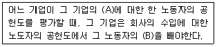
- A : 이윤 B : 임금
- A : 산출량 B : 임금
- A : 이윤 B : 한계생산성
- A : 산출량 B : 한계생산성
(정답률: 53%)
72. 다음 중 노동조합의 임금효과에 관한 설명으로 틀린 것은?
- 파급효과 : 노조부문의 임금인상으로 실업이 발생하여 이들이 비노조부문으로 가는 경우 비노조부문의 균형임금을 낮추는 역할을 한다.
- 위협효과 : 노조부문의 임금 인상으로 실업이 발생하여 이들이 비노조부문으로 가는 경우 비노조부문의 균형임금을 최초수준 보다 높이는 역할을 한다.
- 대기실업효과 : 노조/비노조부문 간의 임금격차가 매우 클 경우 노조부문에서 실직한 사람이 비노조부문에서 구직행위를 하지 않고 계속 노조부문에서 구직행위를 하는 경우를 말하여, 이 경우 비노조부문의 임금이 종전보다 상승하거나 하락할 경우를 모두 상정할 수 있다.
- 노조가 있는 기업의 임금은 대부분의 경우 노조가 없는 기업보다 높게 나타난다.
(정답률: 56%)
73. 산업구조 변동시 성장산업의 기업들이 요구하는 기술과 사양산업에 종사하던 노동자들이 제공하는 기술이 서로 맞지 않아서 사양산업에 종사하던 노동자들이 성장산업으로 즉시 이동할 수 없어 발생하는 실업은?
- 마찰적 실업
- 구조적 실업
- 경기적 실업
- 직업탐색적 실업
(정답률: 73%)
74. 이원적 노사관계론의 구조를 바르게 나타낸 것은?
- 제 1차 관계 : 경영 대 노동조합관계, 제 2차 관계 : 경영 대 정부기관관계
- 제 1차 관계 : 경영 대 노동조합관계, 제 2차 관계 : 경영 대 종업원관계
- 제 1차 관계 : 경영 대 종업원관계, 제 2차 관계 : 경영 대 노동조합관계
- 제 1차 관계 : 경영 대 종업원관계, 제 2차 관계 : 정부기관 대 노동조합관계
(정답률: 68%)
75. 근로자의 근속년수에 따라 임금을 결정하는 임금체계는?
- 연공급
- 직무급
- 직능급
- 성과급
(정답률: 76%)
76. 다음 중 산업민주화 정도가 가장 높은 형태의 기업은?
- 노동자 자주관리 기업
- 노동자 경영참여 기업
- 전문경영인 경영 기업
- 중앙집권적 기업
(정답률: 66%)
77. 하나의 국민 경제에서 최적 인적자원배분이 이루어졌을 때는?
- 동일노동에 대해 동일임금이 지급될 때
- 완전고용을 이루었을 때
- 자연실업률 상태에 도달하였을 때
- 수요부족 실업이 최소화될 때
(정답률: 59%)
78. A산업의 평균임금이 B산업보다 높다면 그 이유와 가장 거리가 먼 것은?
- A산업의 노동조합이 B산업보다 약하다.
- A산업 근로자의 생산성이 B산업 근로자보다 높다.
- A산업 근로자의 숙련도 수준이 B산업 근로자의 숙련도 수준보다 높다.
- A산업은 최근 급속히 성장하고 있어 노동수요에 노동공급이 충분히 대응하지 못하고 있다.
(정답률: 69%)
79. 다음 중 노동공급에 관한 설명으로 틀린 것은?
- 노동공급의 임금탄력성이 0이면 임금이 100% 상승하더라도 노동공급은 변화하지 않는다.
- 시간당 임금이 상승하더라도 개별 노동공급이 반드시 증가하는 것은 아니다.
- 임금이 10% 상승할 때 노동공급이 5% 상승하면 노동공급의 임금탄력성이 2이다.
- 노동공급곡선이 수평선이면 노동공급은 임금에 대해 완전탄력적이다.
(정답률: 55%)
80. 생산요소인 노동의 수요곡선을 이동(Shift)시키는 요인이 아닌 것은?
- 임금의 변화
- 노동을 투입하여 생산한 생산물의 가격변화
- 노동생산성의 변화
- 자본의 생산성 변화
(정답률: 70%)
5과목: 노동관계법규
81. 고용정책기본법상 근로자의 고용촉진 및 사업주의 인력확보 지원시책이 아닌 것은?
- 구직자와 구인자의 대한 지원
- 학생 등에 대한 직업지도
- 취업취약계층의 고용촉진 지원
- 업종별 · 지역별 고용조정의 지원
(정답률: 47%)
82. 남녀고용평등과 일 가정 양립 지원에 관한 법률상 직장 내 성희롱에 관한 설명으로 틀린 것은?
- 사업주, 상급자 또는 근로자는 직장 내 성희롱을 하여서는 아니 된다.
- 사업주는 직장 내 성희롱의 예방을 위한 교육을 실시하여야 하며, 그 예방 교육을 고용노동부 장관이 지정하는 기관에 위탁하여 실시할 수 있다.
- 사업주는 직장 내 성희롱 발생이 확인된 경우 3월 이내에 행위자에 대하여 징계나 그 밖에 이에 준하는 조치를 하여야 한다.
- 사업주는 직장 내 성희롱과 관련하여 피해를 입은 근로자 또는 성희롱 피해 발생을 주장하는 근로자에게 해고나 그 밖의 불리한 조치를 하여서는 아니 된다.
(정답률: 75%)
83. 직업안정법상 유료직업소개사업에 관한 설명으로 틀린 것은?
- 국외 유료직업소개사업을 하려는 자는 고용노동부장관에게 등록하여야 한다.
- 유료직업소개사업을 하는 자는 고용노동부장관이 결정 · 고시나 요금 외의 금품을 받아서는 아니 되나 고용노동부령으로 정하는 고급 · 전문인력을 소개하는 경우에는 당사자 사이에 정한 요금을 구인자로부터 받을 수 있다.
- 유료직업소개사업을 하는 자는 구직자에게 제공하기 위하여 구인자로부터 선급금을 받아 구직의 편의를 도모할 수 있다.
- 유료직업소개사업을 하는 자는 구직자의 연령을 확인하여야 하며, 18세 미만의 구직자를 소개하는 경우에는 친권자나 후견인의 취업동의서를 받아야 한다.
(정답률: 67%)
84. 고용상 연령차별금지 및 고령자고용촉진에 관한 법률상 준고령자에 해당하는 자는?
- 45세 이상 50세 미만
- 50세 이상 55세 미만
- 55세 이상 60세 미만
- 60세 미만
(정답률: 77%)
85. 고용정책기본법상 실업대책사업에 해당하지 않는 것은?
- 실업자 가족의 의료비 지원
- 고용촉진과 관련된 사업을 하는 자에 대한 대부(貸付)
- 실업자의 주택구입자금 지원
- 실업자에 대한 공공근로사업
(정답률: 67%)
86. 남녀고용평등과 일 가정 양립 지원에 관한 법률상 명예고용평등감독관에 관한 설명으로 틀린 것은?
- 고용노동부장관은 사업장의 남녀고용평등 이행을 촉진하기 위하여 외부 전문가 중 노사가 추천하는 자를 명예고용평등감독관으로 위촉할 수 있다.
- 명예고용평등감독관의 업무에는 해당 사업장의 차별 및 직장 내 성희롱 발생시 피해근로자에 대한 상담, 조언이 포함된다.
- 명예고용평등감독관은 해당 사업장의 고용평등이행상태 자율점검 및 지도시 참여한다.
- 명예고용평등감독관은 남녀고용평등 제도에 대한 홍보 · 계몽 활동을 한다.
(정답률: 62%)
87. 헌법상 근로의 권리와 관련하여 명시되어 있지 않은 것은?
- 최저임금제 시행
- 국가유공자의 유가족에 대한 우선적 근로기회 부여
- 여자 · 연소자의 근로에 대한 특별한 보호
- 산업재해로부터 특별한 보호
(정답률: 65%)
88. 근로자직업능력개발법령상 공공직업훈련시설을 설치할 수 있는 공공단체가 아닌 것은?
- 대한상공회의소
- 한국산업인력공단
- 근로복지공단
- 한국장애인고용공단
(정답률: 73%)
89. 근로기준법상 취업규칙에 관한 설명으로 옳은 것은?
- 상시 10명 이상의 근로자를 사용하는 사용자는 취업규칙을 작성하여 노동위원회에 신고하여야 한다.
- 취업규칙에서 근로자에 대하여 감금의 제재를 정할 경우에 그 감액은 1회의 금액이 평균임금의 1일분의 2분의 1을, 총액이 1임금지금기의 임금 총액의 10분의 1을 초과하지 못한다.
- 취업규칙은 해당 사업 또는 사업장에 대하여 적용되는 단체협약과 어긋나서는 아니 되며, 노동위원회는 단체협약에 어긋나는 취업규칙의 변경을 명할 수 있다.
- 사용자는 취업규칙의 작성 또는 변경에 관하여 해당 사업 또는 사업장에 근로자의 과반수로 조직된 노동조합이 없는 경우에는 근로자의 과반수의 동의를 받아야 한다.
(정답률: 48%)
90. 고용상 연령차별금지 및 고령자고용촉진에 관한 법률상 고령자 고용촉진 기본계획에 관한 설명으로 틀린 것은?
- 고용노동부장관이 관계 중앙기관의 장과 협의하여 5년마다 수립하여야 한다.
- 고령자의 직업능력개발에 관한 사항이 포함되어야 한다.
- 고령자의 현황과 전망에 관한 사항은 포함되지 아니하여도 된다.
- 수립할 때에도 고용정책기본법상 고용정책심의 회의 심의를 거쳐야 한다.
(정답률: 61%)
91. 35세인 근로자 甲은 2012년 4월 1일부터 2013년 5월 31일까지 재직하다가 이직하였다. 피보험기간이 14개월인 근로자 甲의 구직급여 소정급여일수는?(관련 규정 개정전 문제로 여기서는 기존 정답인 2번을 누르면 정답 처리됩니다. 자세한 내용은 해설을 참고하세요.)
- 90일
- 120일
- 150일
- 180일
(정답률: 60%)
92. 직업안정법에서 사용하는 용어의 정의로 틀린 것은?
- ‘직업안정기관’이란 직업소개, 직업지도 등 직업안정업무를 수행하는 지방고용노동행정기관을 말한다.
- ‘직업소개’란 구인 또는 구직의 신청을 받아 구직자 또는 구인자(救人者)를 탐색하거나 구직자를 모집하여 구인자와 구직자 간에 고용계약이 성립되도록 알선하는 것을 말한다.
- ‘직업지도’란 구인자 또는 구직자에 대한 고용정보의 제공, 직업소개, 직업지도 또는 직업능력개발 등 고용을 지원하는 서비스를 말한다.
- ‘모집’이란 근로자를 고용하려는 자가 취업하려는 사람에게 피고용인이 되도록 권유하거나 다른 사람으로 하여금 권유하게 하는 것을 말한다.
(정답률: 55%)
93. 고용상 연령차별금지 및 고령자고용촉진에 관한 법령상 업종별 고령자 기준고용률이 틀린 것은?
- 제조업 : 상시근로자수의 100분의 2
- 운수업 : 상시근로자수의 100분의 4
- 부동산 및 임대업 : 상시근로자수의 100분의 6
- 도 · 소매업 : 상시근로자수의 100분의 3
(정답률: 75%)
94. 남녀고용평등과 일 가정 양립 지원에 관한 법률이 규정하고 있는 내용이 아닌 것은?
- 육아휴직급여
- 출산전후휴가에 대한 지원
- 배우자 출산휴가
- 직장보육시설 설치
(정답률: 53%)
95. 근로자직업능력개발법령상 직업에 필요한 기초적 직무수행능력을 가지고 있는 사람에게 더 높은 직무수행능력을 가지고 있는 사람에게 더 높은 직무수행능력을 습득시키거나 기술발전에 맞추어 지식 · 기능을 보충하게 하기 위하여 실시하는 직업능력개발훈련은?
- 양성훈련
- 향상훈련
- 전직훈련
- 집체훈련
(정답률: 70%)
96. 고용보험법상 자영업자인 피보험자의 실업급여의 종류로 틀린 것은?
- 조기재취업수당
- 직업능력개발 수당
- 광역 구직활동비
- 구직급여
(정답률: 49%)
97. 근로기준법상 평균임금과 통상임금에 대한 설명으로 틀린 것은?
- 연장근로수당, 야간근로수당의 산정기초는 통상임금이다.
- 평균임금액이 통상임금 보다 적으면 그 통상임금액을 평균임금으로 한다.
- 일용근로자의 평균임금은 고용노동부장관이 사업이나 직업에 따라 정하는 금액으로 한다.
- 평균임금은 이를 산정하여야 할 사유가 발생한 날 이전 3개월 동안에 그 근로자에게 지급된 임금의 총액을 월수로 나눈 금액을 말한다.
(정답률: 49%)
98. 근로기준법상 이행강제금에 관한 설명으로 틀린 것은?
- 이행강제금은 노동위원회가 부과한다.
- 이행강제금을 부과하기 30일 전까지 사용자에게 문서로 미리 알려주어야 한다.
- 이행강제금은 매년 2회 범위에서 반복하여 부과 · 징수할 수 있다.
- 구제명령을 받은 자가 구제명령을 이행하면 이미 부과 · 징수한 이행강제금은 반환한다.
(정답률: 62%)
99. 고용보험법령상 고용노동부장관은 고용보험기금을 관리 · 운용함에 있어 대량 실업의 발생이나 그 밖의 고용상태 불안에 대비한 준비금을 여유자금으로 적립하여야 한다. 실업급여 계정의 연말 적립금의 적정규모는?
- 해당 연도 지출액의 1배
- 해당 연도 지출액의 1배 이상 2배 미만
- 해당 연도 지출액의 1.5배 이상 2배 미만
- 해당 연도 지출액의 1.5배 이상 2.5배 미만
(정답률: 64%)
100. 근로3권에 관한 설명으로 옳은 것은?
- 근로자는 자주적인 단결권, 단체교섭권, 단체행동권을 가진다.
- 공무원도 근로자이므로 근로3권을 당연히 갖는다.
- 주요방위산업체의 근로자는 국가안보를 위해 당연히 단체행동권이 인정되지 않는다.
- 미취업근로자 개개인에게 주어지는 구체적 권리이다.
(정답률: 69%)